Dual-Band GNSS Front-End Capstone (L1/L5)
SKILLS USED: Antenna Design (L1/L5) | RF/Microwave Design | Keysight ADS & Momentum | S-Parameter Analysis | BJT LNA Design | Chebyshev Bandpass Filters | Wilkinson Power Networks | Bias Tee | GCPW PCB Layout | JLCPCB Fabrication |
Introduction
For my fourth-year capstone, my team and I designed a compact dual-band GNSS RF front-end for autonomous vehicle applications. The system targets GPS L1 at 1575.42 MHz and L5 at 1176.45 MHz so the receiver can combine both bands to cancel ionospheric delay errors and stay reliable in places where single-band GNSS tends to struggle. Our work covered the full RF chain end to end: two inset-fed microstrip patch antennas, a Wilkinson combiner, a wideband BJT LNA, two parallel third-order Chebyshev bandpass filters, a Wilkinson divider and combiner pair, a bias tee, and a single 50 ohm coaxial output to the receiver. All of it was designed and validated in Keysight ADS, with EM simulation in Momentum, and the boards were laid out for 2-layer FR-4 fabrication through JLCPCB.
Why Dual-Band GNSS (L1 and L5)
The ionosphere shifts GNSS signals by an amount that depends on frequency, so a single-band receiver has to estimate that delay rather than measure it. A dual-band receiver that sees both L1 and L5 can solve for the delay directly using the difference between the two bands, which is the main accuracy reason for going dual-frequency in the first place. For autonomous vehicles this matters because the system also has to deal with multipath off buildings and nearby cars, weak signals under tree cover or overpasses, and noise from the rest of the vehicle’s electronics. Dual-band is what makes the correction possible without needing external infrastructure like an RTK base station.

Final System Architecture
The final architecture uses three PCBs connected with SMA cables: a dedicated L1 patch antenna board, a dedicated L5 patch antenna board, and a third RF signal-processing board that handles everything between the antennas and the receiver. The two antenna outputs feed into a Wilkinson combiner, then through a single wideband LNA, then through a Wilkinson divider that routes each band into its own bandpass filter for selectivity, then back through a second Wilkinson combiner, and finally through a bias tee out to the receiver. The bias tee lets the LNA's 3.3 V supply share the same coaxial line as the returning RF, which is what the receiver expects. We chose one wideband LNA instead of two narrowband ones to keep component count low and the layout simpler, knowing the tradeoff was less per-band optimization.

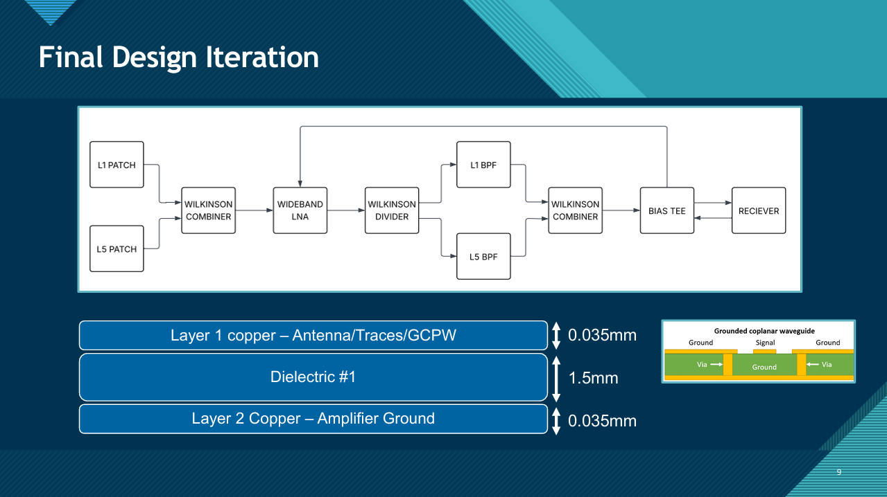
Patch Antenna Design
Both patches are inset-fed rectangular microstrip antennas on FR-4. We picked inset feed because it gave us a way to tune the 50 ohm match by moving the feed point into the patch rather than adding a separate matching network, which kept the boards simple enough for JLCPCB to manufacture cleanly. Starting dimensions came from standard transmission-line model equations, but the analytical numbers never land on the right resonant frequency on the first try, so most of the work was iterating in ADS on the patch length L, inset depth D, and inset width S. The L1 patch took 10 tuning iterations to reach a return loss better than -25 dB at 1575 MHz, and L5 took 12 iterations to do the same at 1176 MHz.
One tradeoff worth being honest about: the final antennas are linearly polarized rather than RHCP, which costs roughly 3 dB against the circularly polarized satellite signal. We dropped the RHCP requirement after evaluating a stacked patch with a hybrid coupler and concluding that the added layout precision and fabrication risk would not fit the timeline. That was a deliberate decision, but it is a real system penalty and one of the first things I would change in a next revision.


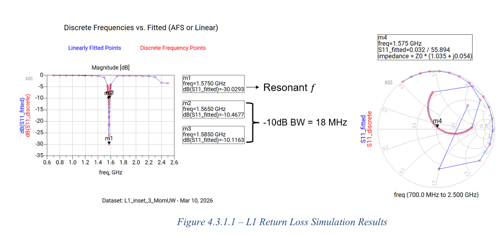
Wilkinson Power Combiner and Divider
The Wilkinson stages are centered at the geometric mean of L1 and L5, which works out to about 1.361 GHz so the same network behaves reasonably at both target frequencies. The design uses quarter-wave branches of 34.1 mm with 70.7 ohm branch lines stepping up from the 50 ohm system impedance, plus a 100 ohm isolation resistor between the two output ports. Trace widths came out of ADS LineCalc at 1.46 mm for the 50 ohm sections and 0.49 mm for the 70.7 ohm branches, then everything was tuned again in Momentum to account for layout effects on the actual PCB. Simulated S11 sits around -15 dB across both bands, S21 and S31 are both around -3.4 dB which is close to the ideal -3 dB split, and the port isolation S32 reaches -22 dB near the design frequency.
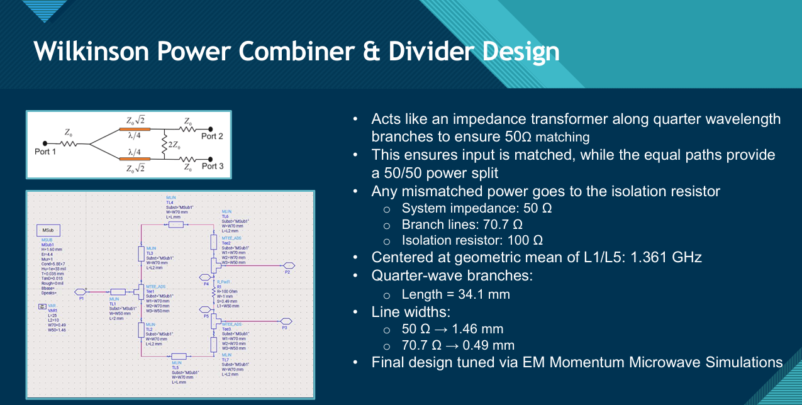
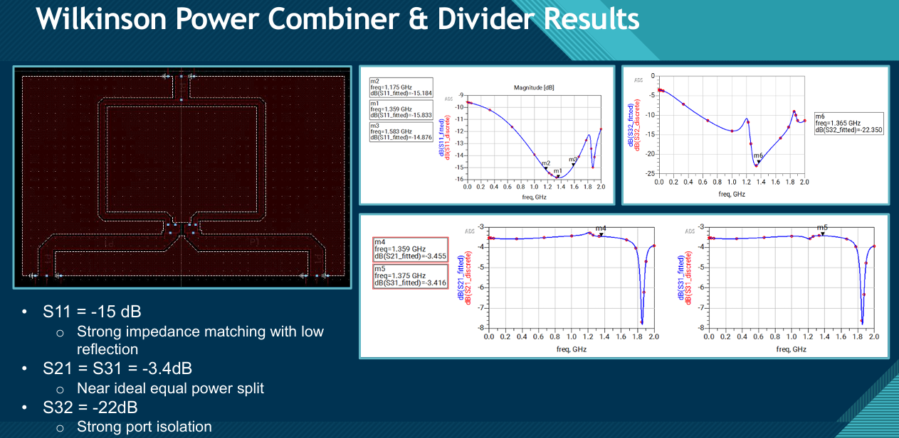
Wideband LNA
The LNA is a single-stage BJT design that has to cover both L1 and L5 in a single wideband passband across roughly 1.1 to 1.7 GHz. The original spec was 20 to 30 dB of gain across both bands with a noise figure under 1 dB and a 50 ohm input. In simulation, gain peaks at about 22.6 dB near 1.36 GHz, holds above 21 dB at L1 (1.575 GHz), and drops to roughly 18 dB at L5 (1.176 GHz). The L1 result lands inside the 20 to 30 dB target window, but the L5 number sits about 2 dB below the lower bound, which is the main concession we accepted to keep a single wideband amplifier instead of splitting into two band-specific LNAs. S22 stays close to 0 dB across the range.
The S11 is the part of the LNA I am least happy with. It sits around -2 to -4 dB rather than the -10 dB you typically want for a comfortable input match, so the matching is acceptable in simulation but not strong, and the noise performance in a real build would depend on improving it. This is on the short list of things to revisit before any hardware iteration.

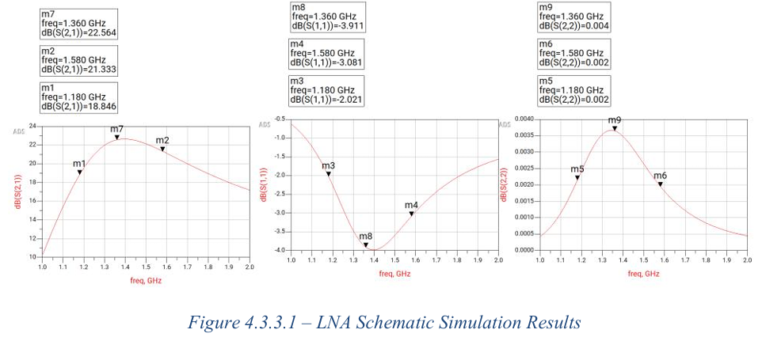
L1 and L5 Bandpass Filters
After the LNA, the amplified signal splits into two parallel paths so each band can be filtered independently before being recombined. Both filters are third-order Chebyshev with 0.5 dB passband ripple and 30 dB stopband attenuation, designed in the ADS filter designer. The L1 filter has a 30 MHz passband centered at 1.575 GHz with a 30 MHz transition band, and the L5 filter has a 24 MHz passband centered at 1.176 GHz with a 25 MHz transition band. Lumped element filters at GHz frequencies are genuinely tricky because the parasitic effects of small inductors and capacitors start to matter at the same order as the components themselves, so in parallel we also designed footprints for commercial SAW filters as a backup and ordered both variants of the RF board. The plan was to bench-compare them and keep whichever performed closer to simulation.
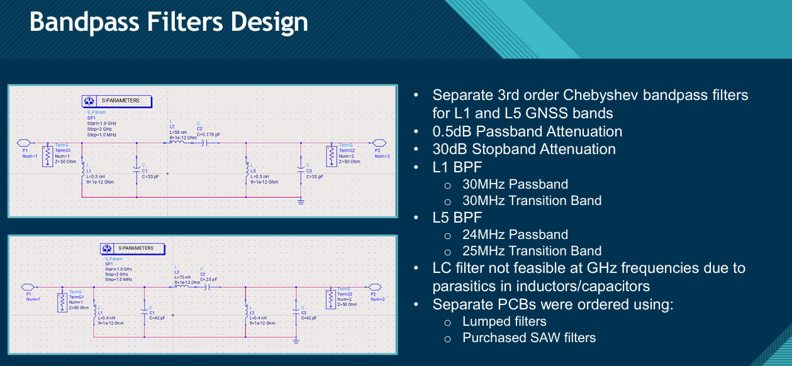
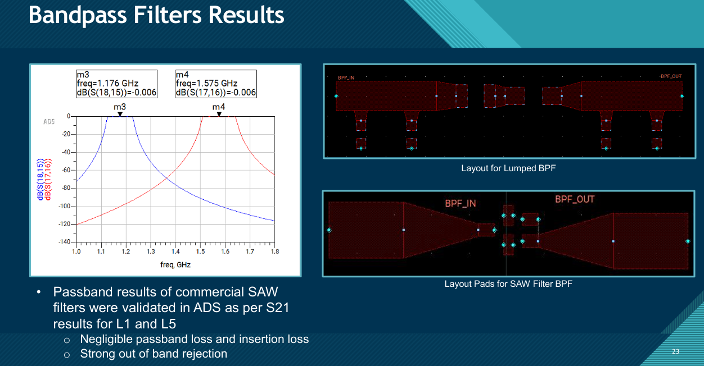
Bias Tee
The bias tee combines the 3.3 V LNA supply and the RF signal onto a single coaxial line, which is how the receiver wants to see them. The topology is fairly standard: a series capacitor on the RF path to block DC, a series inductor on the DC path to block RF, and additional shunt decoupling capacitors placed close to the LNA to filter supply noise at the bias point. Simulated S21 stays within about 0.1 dB of zero across L1 and L5, so almost no RF is lost across the tee, and the isolation between the RF line and the DC supply sits below -140 dB, which is more than enough to keep the supply path quiet.
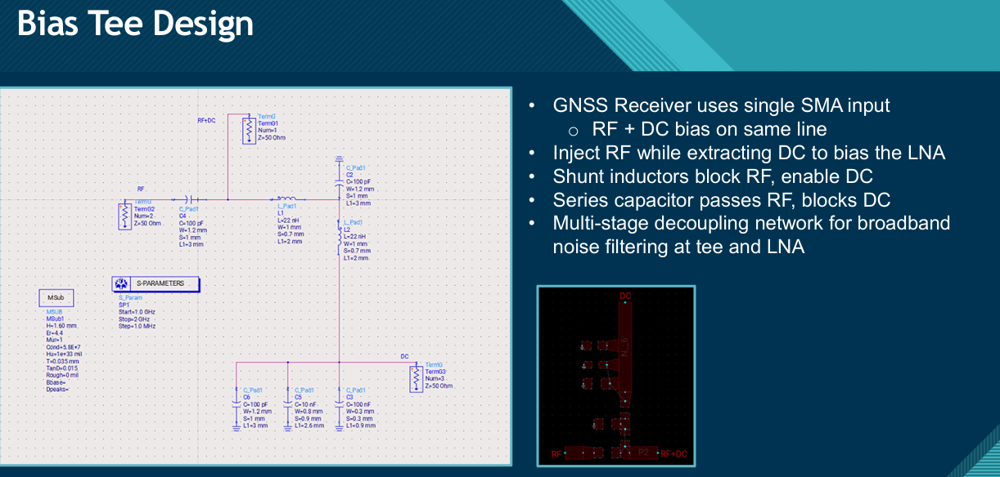
PCB Layout and GCPW Routing
The RF signal-processing board uses grounded coplanar waveguide because at these frequencies you want a controlled return path and shielding between adjacent traces. The stack-up is a 2-layer 1.6 mm FR-4 board: top copper carries the RF traces and ground pours, bottom copper is the amplifier ground, and the GCPW is closed with via stitching at roughly 2 to 4 mm spacing along the traces with extra vias at the Wilkinson junctions and SMA pads. The L1 and L5 patches each got their own dedicated PCB to keep their ground planes large. FR-4 has more dielectric loss than something like Rogers material, but it is what JLCPCB makes cheaply and consistently, and the loss budget worked out fine for this design.
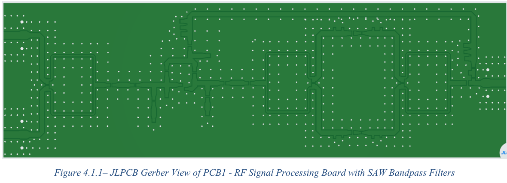
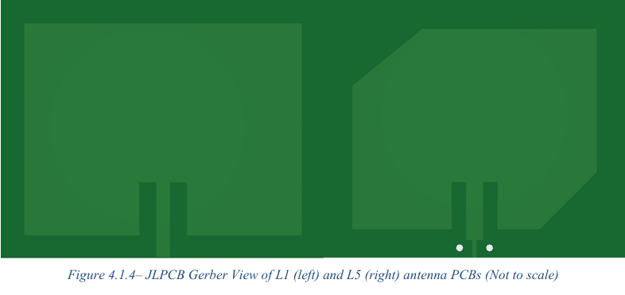
Vehicle Placement Study
Part of the project was thinking about where this front-end would actually live in a vehicle. The constraints are real: sky visibility, multipath off body panels and glass, interference from cameras, motors, and other radios on the vehicle, coax loss to the receiver, and the stealth requirement of staying fully hidden. We compared four concealed mounting options and the under-roof-liner position came out on top: best sky view, short cable run, fully hidden, and the closest approximation of an ideal external mount. Side mirrors, dashboard, and rear trunk all had either sky-visibility or interference issues that knocked them down to backup or non-critical roles.

Cascaded System Simulation
For overall validation, the S-parameter results from each individual subsystem were exported and cascaded together as a single schematic in ADS. This is a circuit-level simulation built from exported S-parameter blocks rather than a full EM simulation of the assembled boards, so it does not capture every PCB-level non-ideal effect. But the result is clean. The cascaded system shows two clear amplified passbands at 1.174 GHz at around 14.2 dB and at 1.578 GHz at around 16.1 dB, with strong rejection between and outside the bands. That is the dual-passband response we set out to design, and it confirmed the subsystem-by-subsystem results held up when put together.
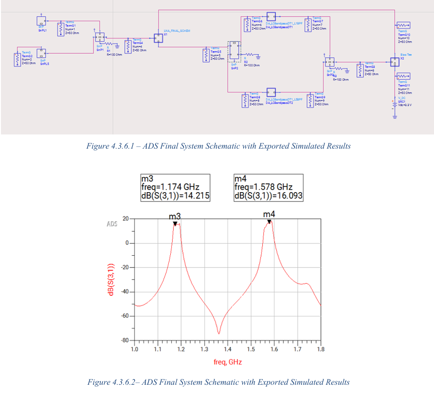
Fabrication and What Actually Happened
This is the part of the project that did not go to plan. We ordered the PCBs through JLCPCB with express delivery to hit the capstone showcase deadline. The order got stuck in JLCPCB's automated review for issues that were intentional in our design, including missing drill holes on a patch antenna board, and even after repeated confirmation from customer support that it would proceed, it sat in a suspended state for over a week and the boards did not arrive in time. As a last-resort backup we tried to fabricate one of the boards through the Western Engineering Electronics Shop in-house, but the milling process could not hit the 0.3 mm clearances the GCPW layout needed and the boards came back largely unetched. So the final report is simulation-only, with the boards designed, reviewed, and ready, but never measured.
Future Work
Once the boards are physically available, the immediate next step is modular VNA testing of each stage to compare measured S-parameters against simulation, then full cascaded system testing, then in-vehicle data collection across the candidate mounting locations to see which placement gives the best real signal quality. Beyond that, the obvious next iterations are a stacked dual-band patch antenna to shrink the front-end and recover RHCP, a pre-LNA filter stage to reject strong out-of-band interferers like LTE and FM before they hit the amplifier, and eventually antennas integrated directly into the vehicle body rather than mounted as a separate module.
Project Timeline
The project ran from September 2025 to April 2026 in staged phases: scoping and literature review, antenna and circuit concept design, subsystem ADS simulation, full-system cascaded simulation, PCB layout and fabrication, and final reporting. A Gantt chart was used to track responsibilities and slip points, and the actual timeline ended up running noticeably long on the antenna and LNA design phases because all four of us were learning Keysight ADS from scratch as we went.

Conclusion
On paper the goal was straightforward: a compact dual-band GNSS front-end at L1 and L5 that could be built, tested, and eventually integrated into a vehicle. In simulation, we got there. Every subsystem hit its target or close to it, the cascaded simulation shows the dual-passband response the design was meant to produce, and the boards are fully ready to fabricate the moment the supply chain cooperates. In hardware, we did not get there, partly because of manufacturing delays outside our control and partly the kind of timeline slip you learn to plan harder against next time. What I came out of this with is hands-on experience in RF/microwave design, ADS and Momentum simulation, GCPW PCB layout for GHz signals, and the much harder problem of co-designing antenna, amplification, and filtering stages so they actually work together rather than just individually on a bench.